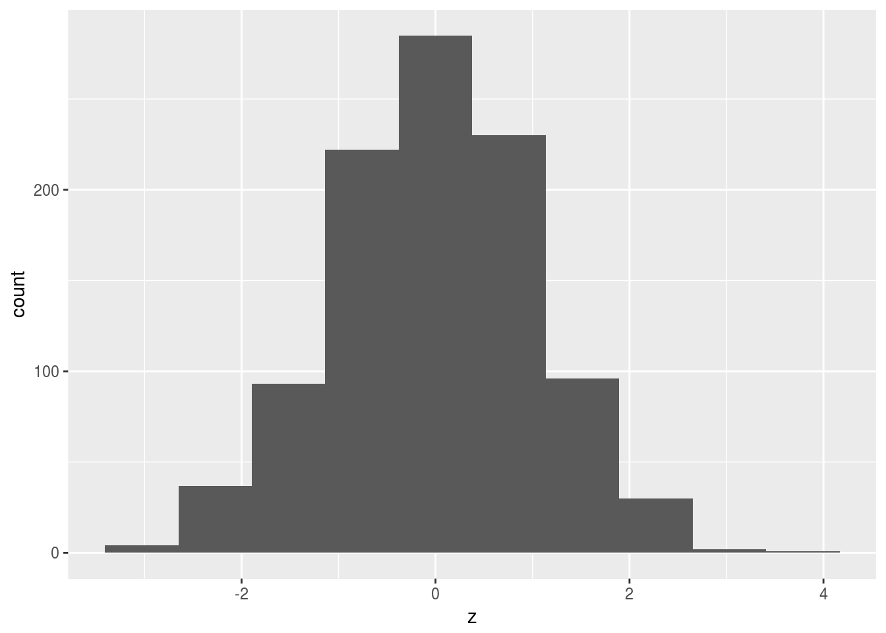

About this blog
I discovered that one can host a blog on Github, on which I already have an account, via a thing called Github Pages. As if that weren’t enough, posting content to this blog is done via R Studio. I created a new project called blog that is linked to a Github repository, and installed the blogdown package (by the amazingly prolific Yihui Xie), and then I create a new post such as this one by, at the console, typing
library(blogdown)
new_post(title="This blog",file="This-blog.Rmd")and then a new R Markdown window pops up, into which I can type any R Markdown (that is, marked-up text plus optional R code). When I’m happy with what I have, I save it, go back to the console, and type
serve_site()which previews my new post, at least as long as it’s in the right folder (still not sure about that).
When it looks all right, I “commit” my changes to Github in the usual way, and then the whole blog appears on Github Pages. It’s, almost, magic.
Plus I can generate some random data and draw a histogram of it:
d=data.frame(z=rnorm(1000))
head(d)## z
## 1 -0.6264538
## 2 0.1836433
## 3 -0.8356286
## 4 1.5952808
## 5 0.3295078
## 6 -0.8204684d %>% ggplot(aes(x=z))+geom_histogram(bins=10)
Pretty bell-curved, I say (as it should be, of course).
Most of the work there was in getting the tidyverse startup messages to disappear, but that’s another story.